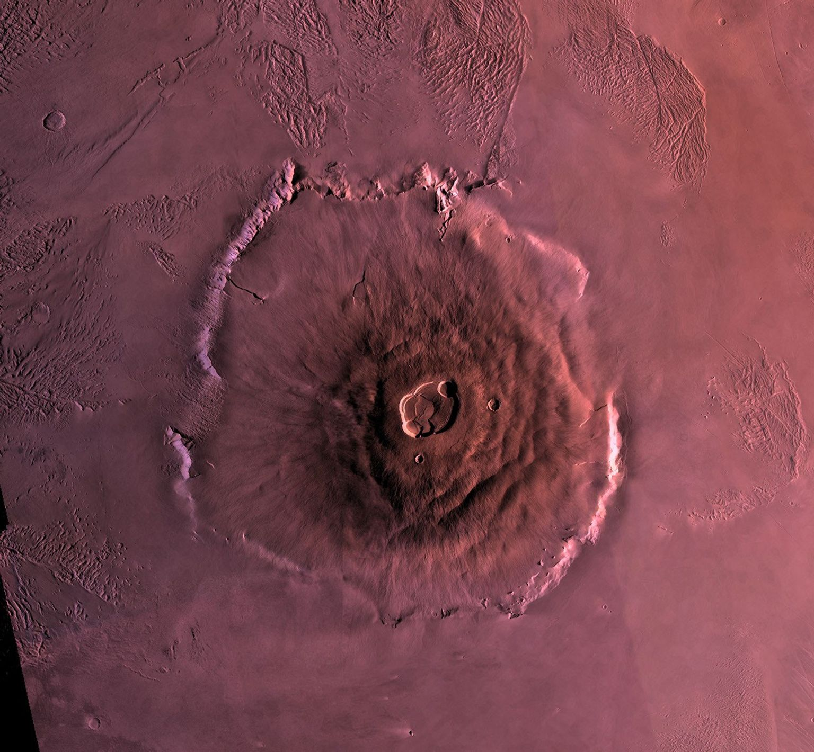
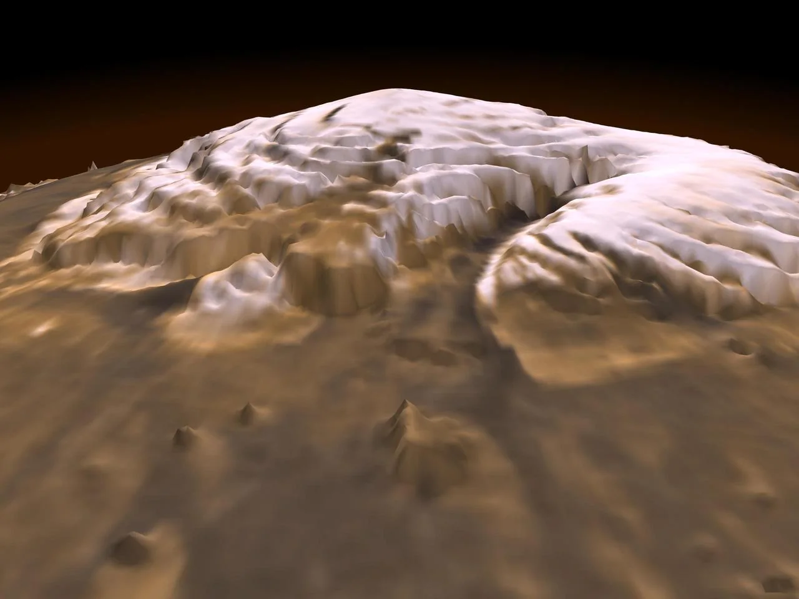

Marte è vicino abbastanza da apparire come un punto rossastro a occhio nudo, ma lontano abbastanza da aver custodito per secoli quasi tutti i suoi segreti. Oggi sonde, rover e satelliti ci mostrano un pianeta freddo e desertico che porta sulla superficie le tracce di un passato molto diverso.
Marte in numeri
Un pianeta di paesaggi estremi
La superficie marziana contiene alcune delle strutture più spettacolari del Sistema Solare. Olympus Mons domina una vasta regione vulcanica e raggiunge dimensioni impossibili sulla Terra. Valles Marineris, invece, è un sistema di canyon che attraversa per migliaia di chilometri la crosta del pianeta.

Questi paesaggi raccontano una geologia diversa dalla nostra. Marte non possiede una tettonica a placche attiva come quella terrestre: un punto vulcanico può quindi rimanere nella stessa posizione per tempi lunghissimi e costruire edifici enormi.
Il mistero dell'acqua
Canali, delta e minerali formati in presenza d'acqua indicano che miliardi di anni fa sulla superficie scorrevano fiumi e si accumulavano laghi. Oggi l'acqua liquida non è stabile a lungo nelle condizioni della superficie, ma grandi quantità di ghiaccio sono presenti ai poli e nel sottosuolo.

Un'atmosfera sottile
L'atmosfera è composta soprattutto da anidride carbonica ed è molto meno densa di quella terrestre. Non trattiene bene il calore e non protegge la superficie dalle radiazioni nello stesso modo. Le temperature cambiano molto e le tempeste di polvere possono estendersi fino a coinvolgere quasi tutto il pianeta.
Perché continuiamo a esplorarlo
Marte è un archivio naturale. Studiare le sue rocce significa ricostruire come un pianeta potenzialmente più ospitale sia diventato freddo e arido. Le missioni cercano ambienti che in passato avrebbero potuto sostenere forme di vita microbica e raccolgono dati utili anche per comprendere l'evoluzione della Terra.
I rover hanno trasformato l'esplorazione in un lavoro geologico sul campo: fotografano, perforano, analizzano campioni e selezionano i luoghi più interessanti. Ogni risultato restringe le domande, ma spesso ne apre di nuove.
Osservare Marte dalla Terra
Quando è favorevolmente allineato con la Terra, Marte diventa uno degli oggetti più luminosi del cielo notturno. Si riconosce per la tonalità arancio-rossastra e per una luce più stabile rispetto alle stelle. Un piccolo telescopio può mostrare il disco del pianeta e, nelle condizioni migliori, qualche variazione superficiale.